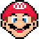
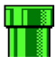
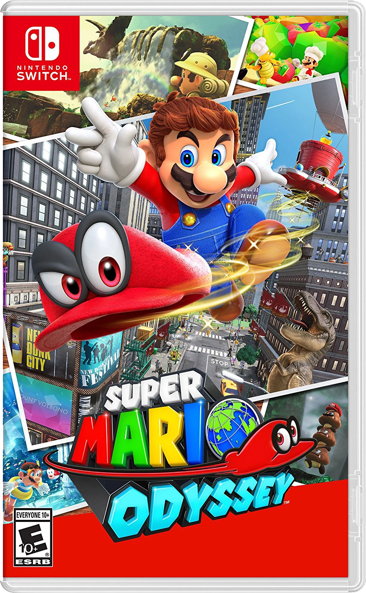
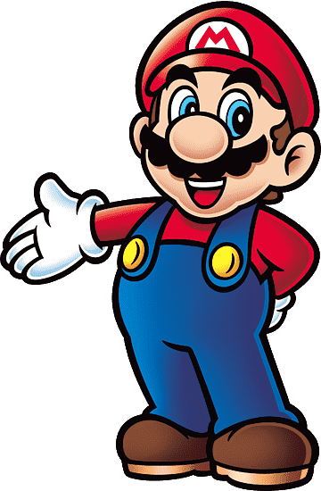

Premios y Logros
En la epoca de 1980 no era como hoy en dia que habia galas masivas en las que se premiaban los juegos del año, pero igualmente super mario bros recibio excelentes criticas a lo largo del mundo y reconocimiento por las revistas especializadas, en especial por haber salvado a la industria de los videojuegos.
La célebre revista japonesa Famitsu y otras publicaciones de la editorial Tokuma Shoten posicionaron consecutivamente a Super Mario Bros. y a su creador, Shigeru Miyamoto, en los puestos más altos de excelencia en diseño y juego preferido por el público.
Ademas recibió el reconocimiento de ser el videojuego más vendido de la historia durante más de dos décadas, alcanzando más de 40 millones de copias en su formato original (y superando las 58 millones sumando todas sus versiones).Este hito comercial le valió un lugar destacado en el Libro Guinness de los Récords.

Super mario bros. a pesar de haber pasado casi 50 años desde su primer lanzamiento como lo conocemos, sigue siendo relevantre hoy en dia. el ultimo titulo llamado "Super Mario Odyssey" se volvio el juego de Mario en 3D más vendido de todos los tiempos: Superó de forma contundente la marca anterior que ostentaba Super Mario Galaxy para la consola Wii (que logró 12,77 millones de unidades).
"Super Mario Odyssey es una aventura brillante y una carta de amor a la serie que convirtió a Nintendo en un nombre familiar... Los juegos de Mario han existido casi desde que existen las consolas, pero afortunadamente, él siempre está evolucionando." — IGN Review.
Curiosidades!
El nombre de Mario se lo debe a Mario Segale, el propietario de los almacenes de Nintendo de América en esa época. Durante una reunión, Segale entró furioso a reclamar el pago atrasado de la renta, y el equipo decidió bautizar al personaje en su honor.
El juego más caro de la historia: En el año 2021, una copia sellada y en perfecto estado del Super Mario Bros. original de 1985 se subastó por la increíble cifra de 2 millones de dólares, convirtiéndose en uno de los coleccionables de videojuegos más valiosos de todos los tiempos.
El misterioso apellido de Mario: Durante décadas se debatió si tenía apellido. En 2015, el propio Shigeru Miyamoto confirmó oficialmente lo que la película de 1993 sugirió: su nombre completo es Mario Mario, y el de su hermano es Luigi Mario (por eso se llaman Los Hermanos Mario).
